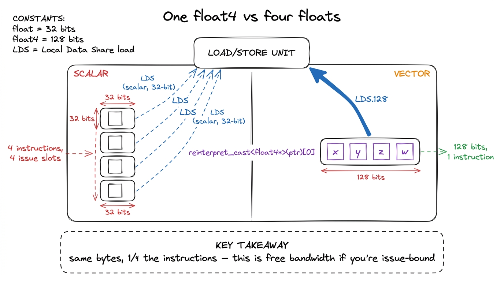
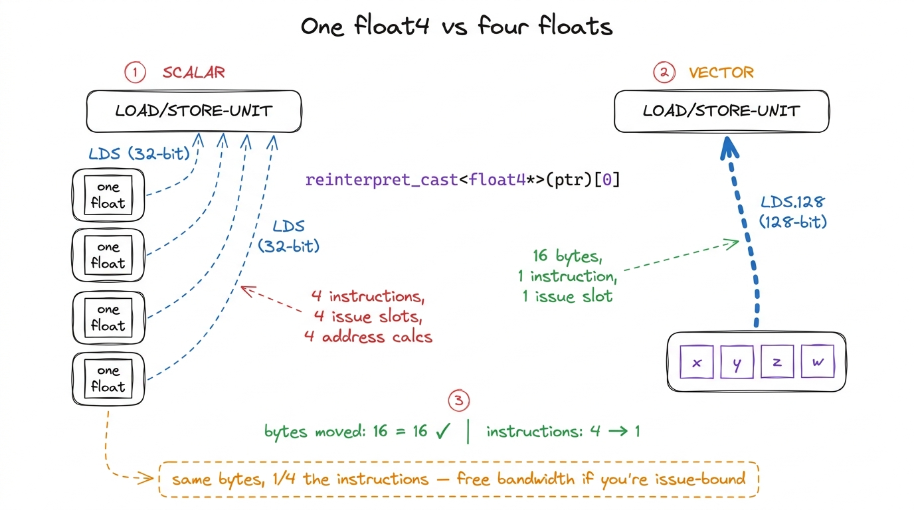
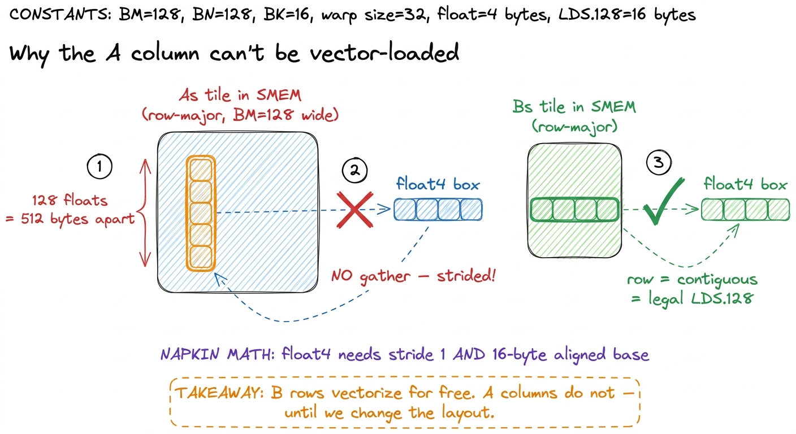
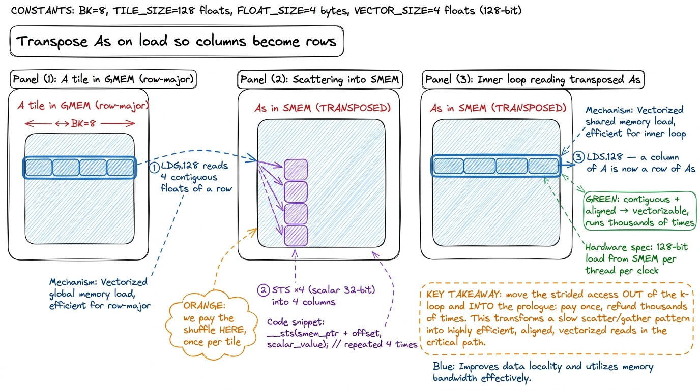
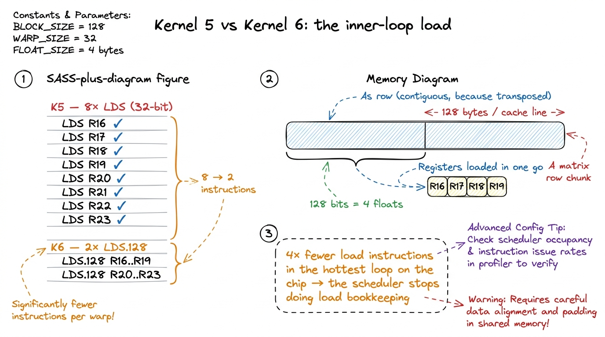
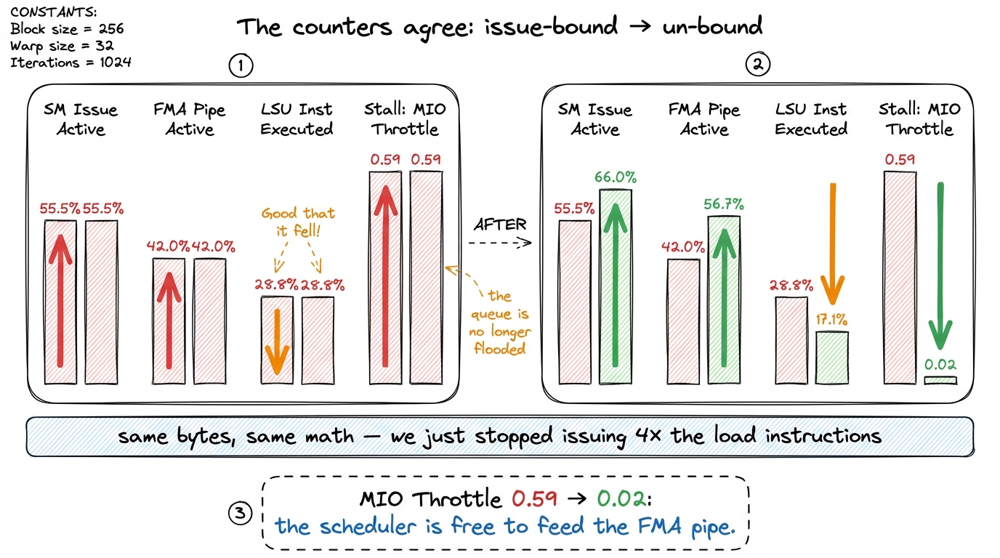

Kernel 6: Vectorized memory access 78.4%
We are five kernels into the ladder, and for the first time the machine has stopped being obviously wrong. Kernel 5 — the 2D register-blocked kernel, where every thread computes an 8 × 8 micro-tile of the output — reached 68.7% of cuBLAS. That is a real kernel. No tensor cores yet, but the FMA pipes are close to busy and shared memory is doing honest work. And here is the thing about a kernel that good: the profiler stops shouting one obvious cause and starts whispering about second-order effects. This article is about learning to hear one of those whispers — the shape of our load instructions — and squeezing another ten points of cuBLAS out of it without touching a single line of the arithmetic.
Before we go there, let me make sure we start from solid ground, because this kernel only makes sense if you can already see the machine underneath it. So let's build the prerequisite from scratch, in one honest paragraph.
What actually happens when a thread reads memory
Here is the mental model I want you to carry through the whole article. Picture the GPU not as a thing that "reads memory," but as a thing that issues instructions. Every cycle, a warp scheduler — the little dispatcher that drives one group of 32 threads (a warp) — can hand out one instruction to one pipeline. There is a math pipeline (the FMA unit, which does fused multiply-adds — a*b+c in one go), and there is a memory pipeline (the load/store unit, or LSU, which fetches and stores data). Crucially, a scheduler can only launch one instruction per cycle. If it spends this cycle launching a load, it did not spend it launching a multiply.1 More precisely, a Hopper SM has four schedulers, each driving one warp per cycle, and some instructions can dual-issue. But the core intuition holds: issue slots are a fixed budget per cycle, and every load instruction you issue is a math instruction you didn't. This is the whole reason instruction count — not just byte count — governs a tight kernel.
So a kernel's speed is a tug-of-war over those issue slots. When a kernel is slow because it is waiting for bytes to arrive from far-away HBM, we call it memory-bound, and the fix is to move data closer (that was kernels 2 and 3). When it is slow because the schedulers are busy issuing bookkeeping instructions — address math, loads, loop counters — instead of useful FMAs, we call it issue-bound, and the fix is to issue fewer instructions for the same work. Kernel 5 pushed us right up to the edge of that second regime. This kernel lives entirely inside it.

figure rendering · Every load instruction you issue is a multiply you didn't. VectorizatiKeep this picture. It is the pebble the whole article rests on: issue slots are a fixed budget, and we are about to stop wasting them.
The hypothesis: ask for 128 bits, not 32
Now the setup, and it is almost embarrassing in its smallness. Our kernel is already loading exactly the right bytes from exactly the right places. We are just loading them one float at a time — and the hardware would much rather we asked for four at once.
Why four? Because every load on an NVIDIA GPU is a memory transaction with a fixed setup cost: an address computation, an instruction issue slot, a trip through the load/store unit. A scalar float load moves 32 bits and pays that whole cost. But the load/store unit can move up to 128 bits — four floats — in a single instruction, for the same overhead. The intrinsic that does this is a float4, and at the SASS level it compiles to LDG.E.128 for global memory and LDS.128 for shared memory.2 The .128 suffix is the access width in bits, not a count of anything. LDG = load-global, LDS = load-shared, STS = store-shared. The .E on LDG.E marks a generic/extended address — it goes through the unified address space rather than a special window. You'll sometimes see LDS.U.128; the .U means unpredicated/uniform.
Let's do the napkin math so this isn't just an assertion. Suppose one thread needs to load 16 floats from shared memory for one step of the inner loop. Scalar: 16 LDS instructions, so 16 issue slots consumed. Vector: 16 / 4 = 4 LDS.128 instructions, so 4 issue slots consumed. Same 64 bytes moved either way — but we handed back 12 issue slots to the scheduler, and it can now spend those 12 cycles on FMAs. That is the entire trick, stated in arithmetic.

figure rendering · A single 128-bit load carries four floats for the cost of one instructSo the plan is simple: wherever our kernel currently issues four consecutive scalar loads to contiguous addresses, replace them with one vector load. This moves the same bytes across the same wires. What changes is the number of instructions we spend to move them — a quarter as many — and, on the global side, the number of memory transactions the coalescer has to coordinate. For a kernel that is starting to bind on instruction issue rather than raw bandwidth, that is exactly the right lever.
The obstacle: you can't vector-load a column
But here is the catch, and it is the interesting part of this kernel — the part that turns a one-line change into a genuine puzzle.
A vector load is only legal when the four elements you want are contiguous in memory and the base address is 16-byte aligned. The hardware has no gather: it cannot pluck four values that live 32 floats apart and pack them into a float4. It can only grab four that sit shoulder-to-shoulder, starting on a 16-byte boundary.
Now let's look at how kernel 5 walks its inner k-loop and ask, honestly, whether our data is contiguous. On each step, a thread needs a small slice of As (the A tile staged in shared memory) and a small slice of Bs. The Bs slice is a row of the B tile — and rows are stored contiguously, so vectorizing the B side is free; a row stays a row. But the As slice a thread wants is a column of the A tile. And if As is stored row-major (which it is in kernel 5), then a column is strided: successive elements of it live one tile-width apart in memory. The four values a thread wants sit BM = 128 floats apart, not next to each other. A float4 over them is flat-out illegal.
This is the exact moment I got stuck the first time I wrote this kernel. I had the reinterpret_cast in place, the code compiled, and the B side sped up beautifully — but the A side stubbornly kept emitting scalar LDS in the SASS. The compiler was quietly refusing to vectorize the strided access, because it couldn't. The bytes weren't contiguous.

figure rendering · The B side vectorizes trivially because a row is contiguous. The A sidThe fix: transpose As as we load it
The fix is a classic, and it is the heart of this kernel: transpose As as we write it into shared memory.
Here is the idea, step by step. When we bring a tile of A from global memory into As, we normally store it row-major — row i of the tile lands in row i of As. Instead, we store it column-major: we write it turned 90 degrees, so that what was a column of the original A becomes a row of As. Now, in the hot inner loop, when a thread reaches for its column of A, it is reaching for a row of As — and a row is contiguous, aligned, and beautifully vectorizable.
The beauty is where we pay for the shuffle. The transpose happens in the load prologue — the code that stages a tile into shared memory, which runs once per tile. The inner loop that reads from As runs thousands of times per tile. So we take the awkward strided access and move it out of the loop that executes thousands of times and into the prologue that executes once. That is almost always the right trade: pay the tax once, collect the refund thousands of times.3 The global read of A that feeds the transpose is itself a float4: we read four contiguous elements of a row of A with one LDG.E.128, then scatter them into four different columns of As. So the transpose costs us four scalar STS stores (32-bit each) in the prologue — the one place in this kernel we deliberately give up vectorization on the store to buy it back four times over on the load. Net: one vector global-read, four scalar shared-stores, all outside the hot loop.

figure rendering · Transposing As at load time turns the strided column read in the hot lThe code
Concretely: we reinterpret the pointers as float4, load a whole vector from global memory, and hand-place the four lanes. Here is the load prologue of the inner-k iteration, with the A transpose spelled out.
// BM=128, BN=128, BK=8. Each thread owns an 8x8 tile of C.
// --- vectorized global -> shared, with A transposed on the way in ---
float4 tmp = reinterpret_cast<const float4*>(
&A[(innerRowA) * K + innerColA * 4])[0];
// scatter the 4 loaded floats into 4 different columns of As (the transpose)
As[(innerColA * 4 + 0) * BM + innerRowA] = tmp.x;
As[(innerColA * 4 + 1) * BM + innerRowA] = tmp.y;
As[(innerColA * 4 + 2) * BM + innerRowA] = tmp.z;
As[(innerColA * 4 + 3) * BM + innerRowA] = tmp.w;
// B needs no transpose: a row stays a row, store the whole vector at once
reinterpret_cast<float4*>(&Bs[innerRowB * BN + innerColB * 4])[0] =
reinterpret_cast<const float4*>(&B[innerRowB * N + innerColB * 4])[0];Two things deserve a beat. First, that reinterpret_cast<float4*> is not cosmetic — it is a promise to the compiler. The compiler cannot prove your float* happens to be 16-byte aligned, so it will never vectorize a plain float* load on its own; casting to float4* is you swearing "trust me, this address is aligned," which is what unlocks the LDG.E.128.4 If you lie — if the pointer is not actually 16-byte aligned — you get a misaligned-address fault at runtime, not a compile error. In this kernel alignment is guaranteed because BM, BN, BK are all multiples of 4 and the base pointers are cudaMalloc'd (which returns at least 256-byte-aligned memory), so every float4 boundary lands cleanly. Get the tile arithmetic wrong and it crashes — a good crash, because it tells you immediately. Second, notice the asymmetry: the A store is four scalar STS (the transpose scatter), while the B store is a single float4 write. That asymmetry is the whole "obstacle" section made real in code.
And here is the inner loop, where the payoff lives — it now reads its register-tile operands as vectors straight out of shared memory:
for (uint dot = 0; dot < BK; ++dot) {
// load an 8-wide slice of A and B into registers, 4 floats at a time
float4 regA0 = reinterpret_cast<float4*>(&As[dot * BM + threadRow * TM])[0];
float4 regA1 = reinterpret_cast<float4*>(&As[dot * BM + threadRow * TM + 4])[0];
float4 regB0 = reinterpret_cast<float4*>(&Bs[dot * BN + threadCol * TN])[0];
float4 regB1 = reinterpret_cast<float4*>(&Bs[dot * BN + threadCol * TN + 4])[0];
// ... 8x8 = 64 FMAs into the accumulator using regA{0,1}.{x,y,z,w} ...
}Nothing about the arithmetic changed. We compute the same 8 × 8 outer product per k-step with the same 64 FMAs into the same accumulator registers. Only the loads that feed it were reshaped — from eight scalar LDS down to two LDS.128 on each of the A and B sides.
The evidence: eight scalar loads become two vector loads
This is the moment that makes the whole kernel worth writing. Compile kernel 5 and kernel 6, and diff the SASS of the inner loop. And I mean the SASS — the actual machine code — not the PTX. PTX is a virtual ISA and lies about widths; it is ptxas that decides the real instruction shapes far downstream, and only the SASS tells you what the chip will truly execute.5 This bites people constantly: you'll see nicely vectorized ld.shared.v4 in the PTX and assume you're done, but ptxas may re-scalarize it if it can't prove alignment or if register allocation forces its hand. Always confirm in cuobjdump -sass, never in -ptx. The kernel you think you wrote and the kernel ptxas built are different objects until you check.
In kernel 5, loading the eight A operands for one k-step looks like this — eight separate instructions, eight issue slots, eight address computations:
LDS R16, [R8]
LDS R17, [R8+0x4]
LDS R18, [R8+0x8]
LDS R19, [R8+0xc]
LDS R20, [R8+0x10]
LDS R21, [R8+0x14]
LDS R22, [R8+0x18]
LDS R23, [R8+0x1c]In kernel 6, the same eight floats arrive in two instructions:
LDS.128 R16, [R8]
LDS.128 R20, [R8+0x10]
figure rendering · The signature moment: eight scalar LDS collapse into two LDS.128. SameThat 8-to-2 collapse is the entire thesis of the kernel, rendered in assembly. And it is not only the A side. The B operands collapse the same way. Every global tile load becomes an LDG.E.128. Across the inner loop the total instruction count drops sharply, and — this is the part that matters — the drop is concentrated in the load/store issue path, which is exactly where a register-blocked kernel starts to bind once the FMA pipes are already busy.
But I don't want you to trust the SASS alone, so let's ask the profiler and watch the numbers move.
What the profiler says (and why I believe it)
Point Nsight Compute at kernel 5 and kernel 6 and compare the counters. This is where the abstract "issue-bound" story turns into hard percentages, and every one of them points the same direction.
The share of cycles the scheduler actually manages to issue something — SM Issue Active — climbs from about 55.5% to 66.0%. The FMA pipeline, the one doing real work, goes from busy 42.0% of cycles to 56.7%. Meanwhile the load/store pipeline's share of executed instructions — SM Inst Executed Pipe LSU — drops from 28.8% to 17.1%, because we're issuing far fewer load instructions to do the same loading.6 These exact counter values are from a Hopper-class run of this exact kernel ladder; the numbers shift a little with matrix size and driver, but the ratios and directions are what's stable. The single tell-tale sign is that SM Issue Active and the FMA-active fraction move up together while the LSU fraction moves down — that's the fingerprint of an issue-bound kernel being un-bound.
The most satisfying number is a stall reason called MIO Throttle. The MIO (Memory Input/Output) pipeline is the shared front-end that queues up shared-memory and other special instructions; when you flood it with too many load instructions, warps stall waiting for a slot in that queue, and Nsight reports it as "Stall MIO Throttle." In kernel 5 that stall reason sits at 0.59 cycles-per-instruction of penalty. In kernel 6 it collapses to 0.02 — essentially gone. We didn't move the queue faster; we simply stopped putting so many instructions in it.

figure rendering · The profiler's four-way confirmation: issue activity up, FMA activityEvery arrow points the same way, and they agree with the SASS, and they agree with the mental model from the opening. That triple agreement — code, assembly, profiler — is what lets you believe an optimization instead of just hoping.
The number
Now the payoff. Running the benchmark, kernel 6 reaches 18,237 GFLOP/s — 78.4% of cuBLAS, up from kernel 5's 15,972 GFLOP/s / 68.7%.7 The exact percentage moves a little with matrix size and driver version, but the direction and rough magnitude are stable: vectorization on top of a good 2D-tiled kernel is reliably worth roughly ten points of cuBLAS on Hopper. On some sizes the gain is larger because the shorter instruction stream also relieves the instruction cache, and on a related H100 worklog the same move lands around 72% of cuBLAS from a slightly different baseline — the mechanism is identical even when the headline number differs. Roughly a ten-point jump, from a change that moved not a single byte differently and did not touch the math. We simply asked the load/store unit for its data in the width it prefers.
It's worth being honest about why this works, because "vectorization made it faster" is exactly the kind of folk explanation that stops you learning. Two distinct things happened, and they stack.
First, we cut the number of instructions the warp scheduler issues in the hot loop. More of each cycle now goes to useful FMAs instead of load bookkeeping — a pure issue-overhead win, the one we watched in the profiler as MIO Throttle collapsing and FMA-active climbing.
Second, on the global side, LDG.128 presents the coalescer — the unit that merges a warp's 32 loads into as few 128-byte memory transactions as possible — with a cleaner, wider request. A warp's worth of vector loads maps onto fewer, fatter transactions, which means better use of every 128-byte line we pull from HBM. This is a memory-coalescing refinement layered on top of the issue-count win.
And the transpose of As is what made both of those legal for the A operand — the operand that would otherwise have been stuck issuing strided scalar loads forever. One layout change, two compounding wins.
Notice, too, how tightly this couples back to kernel 5. The 2D register tile is what created the pattern of "load 8 contiguous values, then reuse them in 64 FMAs" that vectorization could grab onto. On the naive kernel 1 there was nothing to vectorize, because there was no register tile to feed. Each optimization on this ladder builds the surface the next one stands on.
The honest caveat: we may have just made a new problem
Here is the part a lot of write-ups skip. The transpose we just introduced changed which threads touch which of the 32 shared-memory banks, and that is not automatically a good thing.
Quick reminder of the mental model: shared memory is split into 32 banks, and a warp's 32 threads can each read one bank in parallel — if they land on 32 different banks. If two threads in the same warp hit the same bank on different rows, the hardware can't serve both at once, so it serializes them. That's a bank conflict, and it silently halves (or worse) your shared-memory throughput.
When I profiled kernel 6 carefully, the load path was now tight — but the shared-memory access pattern the transpose created still showed real conflicts: on the order of a 5-way conflict on some loads, with a meaningful fraction of shared-memory wavefronts wasted in serialization.8 Vectorizing actually helps bank behavior in one respect — a LDS.128 touches four consecutive banks in one shot, which is friendlier than four independent scalar accesses that each risk a conflict. But the transposed layout can still line up two threads of a warp onto the same bank across rows. The point stands: we fixed the instruction-count problem and, in doing so, handed ourselves a fresh bank-layout problem to solve. That's normal. Kernels are a game of moving the bottleneck.
So the load path is no longer the wall. The next suspect is the layout of the very shared memory we just so carefully arranged. That is the honest state of the kernel: faster, and pointing at its own next flaw.
The bridge
So the next move is not another loading trick. It is to look hard at the shared-memory access pattern this transpose created and ask whether the 32 threads of a warp spread cleanly across the 32 banks — or whether our tidy transpose quietly introduced a bank conflict. Untangling that, plus a broader autotuning sweep over the tile dimensions BM, BN, BK, TM, TN to find the shape this particular GPU likes best, is what carries us from 78.4% toward the mid-80s.
That sweep is kernel 7, and it lands around 84.8% — not by any new idea, but by admitting that the five tile parameters trade occupancy against register-tile size against shared-memory footprint in a way no napkin can predict, so you search instead of guess. Then kernel 8 restructures the block into warptiles to relieve the shared-memory pressure structurally, and reaches the low 90s. Beyond that, closing the last gap to a cuBLAS-beating kernel means double buffering with cp.async to overlap the tile loads with the math, and eventually the tensor cores.
But every one of those is a refinement of moves we've already installed. This kernel's move was the smallest of them all — reshape the loads, don't change the math — and it still bought ten points of cuBLAS. As always, we don't guess the shape: we let a measured sweep pick it, and we read the SASS to confirm the kernel we think we wrote is the kernel ptxas actually built.